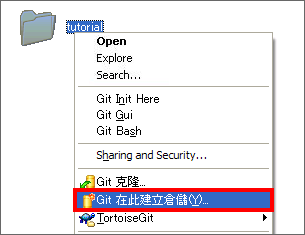
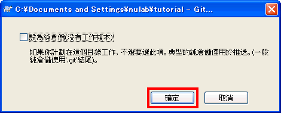
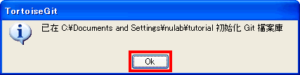
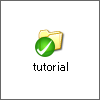
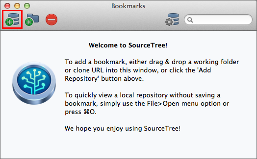
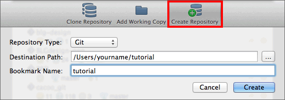
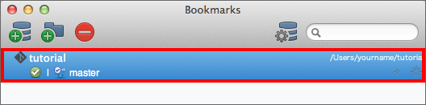

我們要來新建一個本地端數據庫。首先，先建立一個名稱為「tutorial」的空目錄，並把它放在Git版本管理下。
接下來的教學會以這個目錄進行講解。
Windows
請在電腦上的任何一個地方建立tutorial目錄。將tutorial目錄放在Git的管理之下，按右鍵後點一下「Git
在此建立倉儲」。

接著會顯示以下畫面。不要勾選「設為純倉儲」直接點一下確定。

如果成功的話會顯示以下畫面。點一下OK，關閉視窗。

tutorial目錄圖示會顯示如下。如果圖示沒有變化的話，請點擊右鍵選單的「刷新到最新的狀態」。

接下來，在本地端建立新的數據庫。建立一個名稱為「tutorial」的空目錄，把它放在Git的管理之下。
接下來的教學會以這個目錄進行講解。
Mac
請在電腦上的任何一個地方建立tutorial目錄。然後啟動SourceTree。
點擊收藏夾列表視窗左上角的「Add Repository」，或從選單列選擇檔案
> 新建

點擊「Create
Repository」。輸入收藏夾的名稱，這個名稱必須跟設定在本地端數據庫的目錄與SourceTree顯示的名稱一致，完成後點擊「Create」。
tutorial目錄就會以「tutorial」的收藏夾名稱登錄。

一切設定成功後，在收藏夾列表裡會顯示剛剛添加的數據庫。

接下來，在本地端建立新的數據庫。建立一個名稱為「tutorial」的空目錄，把它放在Git的管理之下。
接下來的教學會以這個目錄進行講解。
主控台
請在電腦上的任何一個地方建立tutorial目錄。把tutorial目錄放在Git的管理之下，使用init命令移動到這個目錄並將目錄建立為本地端數據庫。
$ git init
跟著下面的步驟，將新建立的tutorial目錄設定為Git數據庫
$ mkdir tutorial
$ cd tutorial
$ git init
Initialized empty Git repository in /Users/yourname/Desktop/tutorial/.git/